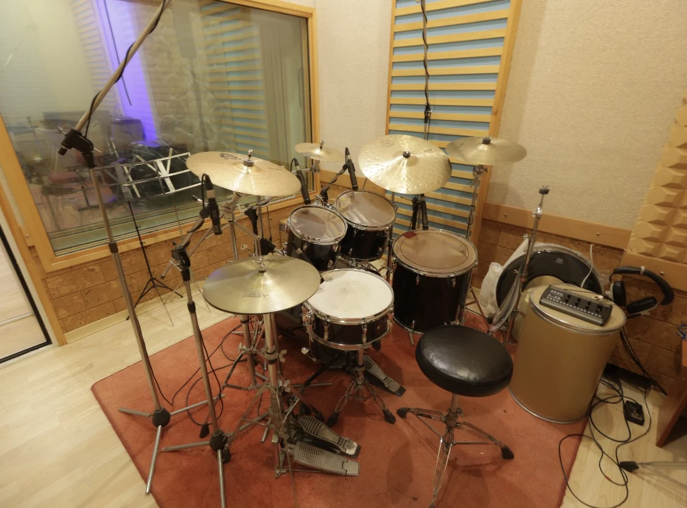

Artzi Recording and Rehearsing Studio is the evolution of Argiriou Recording Studio, a space that has been serving Greek recorded music for 45 years.
At 36 Taxiarchon Street you now find a space equipped with state-of-the-art technology for the modern form of traditional music rehearsal.
On top of straightforward recording, mix and mastering are now offered, so clients get their material in exactly the format they want.
The Midas M32 Live console in the rehearsal room and the Soundcraft T524 in the control room guarantee results on a par with top-tier recording.
Tzina Argyriou, owner and manager, handles all projects involving rehearsal-level recording, mixing and mastering.
What you will find
- Acoustically treated rooms
- Professional drums, amps & PA
- Midas M32 & Soundcraft T524 consoles
- Air-conditioning and comfortable lighting
- Easy access & parking